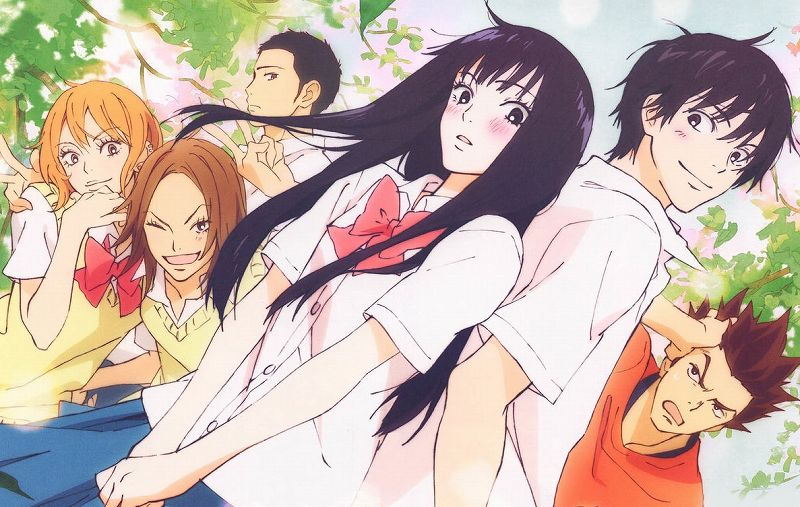

<DOCTYPE html>
<html lang = "ja">
<head>
<meta charset="utf-8">
<meta name=”viewport” content=”width=device-width,initial-scale=1.0″>
<title>君に届け</title>
<link rel="stylesheet" href="kiminitodoke.CSS">
<style>


</style>
</head>
<body>

<h1 align="center">あらすじ</h1> 
<br><h2  align="center"> 
<br>舞台は北海道。北幌高校に入学した黒沼爽子は性格は良いが、見た目が暗く、
<br>長い黒髪のせいで周囲からは「貞子」と呼ばれて恐れられ、クラスに全く馴染めないでいた。
<br>しかし、自身とは対照的な、爽やかで、学年で男女問わず人気者で、噂を全く気に
<br>しないクラスメイトの風早翔太と親しくなった事をきっかけに、友情・恋愛・進路などを
<br>通して爽子は成長していく。そんな爽子を中心とした登場人物それぞれの高校生活3年間の青春模様を描く。</br>

</body>

</html>